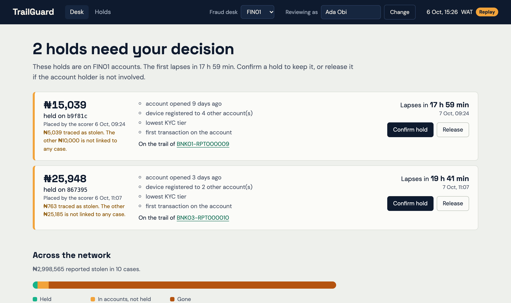
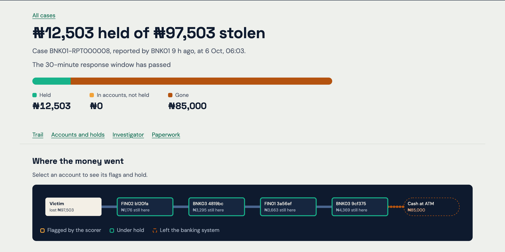

lost to electronic payment fraud in 2025, down 51% from ₦52.26bn in 2024
of 2025 fraud volume came from social engineering, costing ₦17.84bn
drop in fraud reporting in Q4 2025, which risks hiding the true scale
Internet banking was the costliest channel: ₦13.37bn from only 4,507 cases. Insider abuse is the most serious social-engineering threat.
Social engineering or an insider gives the fraudster access.
Money fans out across mule accounts within minutes, often at odd hours.
Cross-bank hops delay recovery, and getting funds back needs court orders.
Each bank sees only its own hop. CBN wants fraud response in under 30 minutes.
A machine-learning scorer flags mule accounts as transactions happen, often before the victim reports.
Reported funds are followed hop by hop across partner banks.
Hold alerts reach downstream banks, using the CBN 24-hour watchlist window.
Hash-anchored alerts and holds give a court-ready evidence pack and a drafted suspicious transaction report.
Send transaction events and keep data in-house
Salted, hashed BVN, phone and device IDs; risk tier only
Scores accounts and spots shared devices and BVNs
Hop-by-hop path and hold alerts
Automatic holds, fraud desk, AI investigator, evidence ledger
A small connector inside each bank hashes customer IDs before anything leaves the bank.
Every hold stays under human review, with a full audit trail.
| What | Today | With TrailGuard |
|---|---|---|
| Visibility | Each bank sees only its own hop | One privacy-safe trail across banks |
| Response | Calls between fraud desks, then court orders | Hold alerts on shared signals, aiming for seconds |
| Evidence | Scattered logs and screenshots | Tamper-evident, court-ready evidence pack |
| Privacy | Raw data is hard to share | Hashed IDs and risk tiers only |
The victim's bank sends the fraud report through its connector
The tracer follows the money hop by hop across every bank
Accounts still holding stolen money get a temporary 24-hour hold
The AI investigator chases banks and drafts the evidence pack and report
Each bank's fraud desk confirms or releases the holds on its accounts
Mule accounts are often flagged and held before the victim even reports.
No hold becomes permanent without a person at the account's bank.


of stolen transactions traced across banks, with no innocent transaction flagged
of mule accounts flagged (67 of 71); only 2 of 5,543 genuine accounts wrongly flagged
cases had a mule flagged before it moved the money on
for the AI investigator to work a full case
Synthetic data: 6 institutions, 5,614 accounts and 40 fraud cases over 7 days, calibrated to NIBSS figures. A pilot on real data is the next proof.
Hold alerts in seconds, supporting CBN's goal of fraud response under 30 minutes.
Fits CBN's 2026 AML standards: automated, AI-driven, near-real-time fraud monitoring.
Uses the 24-hour BVN watchlist window and NIBSS shared analytics already in motion.
Hosted in-country for data localisation, with human review and an audit trail on every hold.
Outcome: more stolen funds held before cash-out, and fewer victims waiting on court orders.
One pilot bank first: alerts, trails and hold recommendations in one view.
Join the shared gateway to send and receive mule-risk signals.
An industry layer that supports national fraud forum and watchlist work.
A WhatsApp and USSD assistant in English, Pidgin, Yoruba, Hausa and Igbo to report fraud fast.
Start inside one pilot bank. Expand through NIBSS.
Human review on every hold. Full audit trail. Independent audits of the shared registry.
Gradient-boosted models score accounts for mule behaviour, tested against labelled fraud scenarios.
Salted, hashed IDs for cross-bank matching. Raw customer data never leaves the bank.
A case investigator built on the Claude API: it traces, places temporary holds, chases banks and writes reports. A human reviews every hold.
Hash-chained audit log, with hashes published to partner banks, for tamper-evident holds and evidence.
Bank connector and real-time API (FastAPI) designed for NIBSS rails, BVN and NIN checks, and the CBN watchlist.
In-country hosting, Postgres, containerised services and a live dashboard for fraud teams.